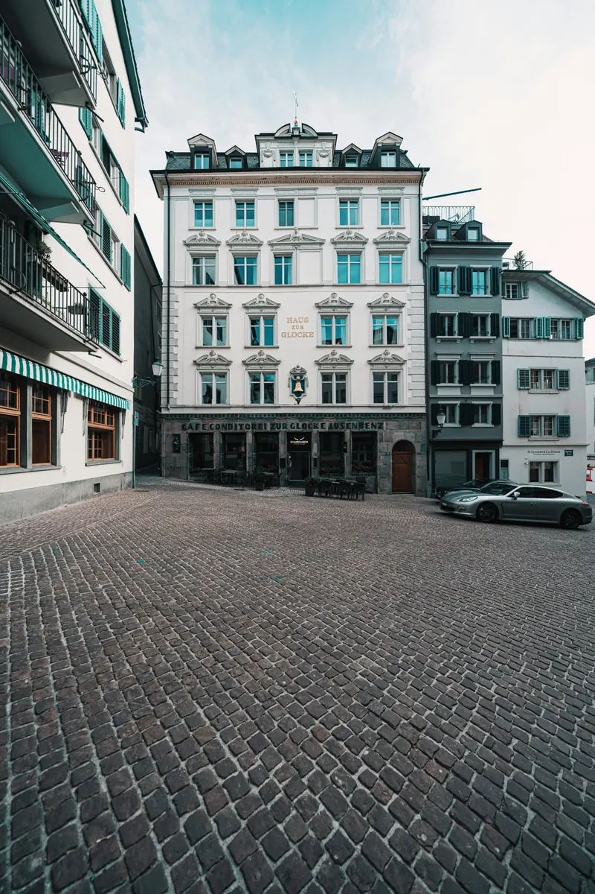

«En noviembre Zúrich se vuelve pequeña y cálida: niebla sobre el lago, luces en las calles y vino caliente en cada plaza.»
— Mike, vuestro colega de Zúrich

Bienvenidos
Mi Zúrich, para vosotros
He reunido aquí lo que yo mismo enseñaría a un amigo que viene por primera vez: el casco antiguo, los mercados de Navidad, un par de museos que merecen la pena, sitios para comer bien y algunas excursiones en tren. Nada es obligatorio: elegid lo que os apetezca cada día.
Entre semana, todo está pensado para después del trabajo. El fin de semana hay más tiempo para museos, montaña o una excursión. Las recomendaciones llevan una prioridad: TOP 10, Muy recomendable o Si tienes tiempo.
Día a día
Vuestra semana
Una propuesta para cada día. Entre semana, para la tarde y la noche; el sábado y el domingo, para el día entero.
Consejo: en el móvil, «Añadir a pantalla de inicio». Así tenéis la guía a mano como una app, y los textos funcionan también sin conexión.
Descubrir
Lo que merece la pena
Todos los lugares de la guía. Filtrad por tema, por momento del día o por el tiempo que haga. El mapa de abajo muestra la misma selección.
Mapa
Todo en el mapa
Tocad un punto para ver la ficha, abrirlo en Google Maps o ver cómo llegar. Los puntos grandes son el TOP 10. Se aplican los filtros de «Descubrir».
Rutas
Planear una tarde
Paseos probados, con el orden que tiene sentido a pie. Elegid cuánto tiempo tenéis.
Mi ruta
Guardad lugares con el corazón en las fichas y cread aquí vuestra propia ruta a pie en Google Maps.
Excursiones
Suiza en tren
Para el fin de semana: destinos a una hora o menos desde Zürich HB, sin coche. Los tiempos son de ida, aproximados; comprobad siempre la conexión del día.
Fuera del límite de una hora: el Rigi Kulm, con vistas alpinas impresionantes, está a unas 1,5–2 horas. Solo si tenéis un día entero y el cielo despejado.
Gastronomía
Qué probar
Fondue
Queso fundido con vino blanco en una olla común; se moja pan con un tenedor largo. La clásica es «moitié-moitié», mitad Gruyère y mitad Vacherin. Se acompaña de vino blanco o té, nunca de agua fría.
Raclette
Queso fundido raspado directamente sobre patatas cocidas, con pepinillos y cebolletas en vinagre.
Rösti
Patata rallada y dorada en la sartén, crujiente por fuera. El acompañamiento suizo por excelencia.
Zürcher Geschnetzeltes
El plato de la ciudad: tiras de ternera en salsa de nata con champiñones, servidas con rösti.
Chocolate suizo
De Sprüngli, Lindt o cualquier confitería. En Adviento, buscad también los «Tirggel», galletas finas de miel típicas de Zúrich.
Mis recomendaciones personales
Estos no salen en las guías turísticas: son los sitios a los que voy yo para un café o un almuerzo tranquilo, en Zúrich-Oeste y Wipkingen.
Dónde comer
Información práctica
Bueno saberlo
Francos, no euros
En Suiza se paga en francos suizos (CHF). La tarjeta y el pago sin contacto funcionan casi en todas partes; algunos mercados son incluso solo con tarjeta. La propina está incluida; redondear es un detalle.
Transporte público
Tranvías, autobuses y trenes son puntuales y frecuentes. El billete se compra antes de subir (máquina o app SBB Mobile); no se compra al conductor y hay controles.
Zonas ZVV y tren SBB
Dentro de la ciudad basta un billete ZVV de la zona 110. El aeropuerto está en otra zona. Para excursiones a otras ciudades (Lucerna, Zug…) se compra un billete SBB normal hasta el destino. Comparad precios antes de comprar un abono o la Zürich Card.
Frío y oscuridad
A finales de noviembre hace frío y anochece hacia las 16:40. Abrigo, gorro, guantes y calzado cómodo e impermeable: se camina mucho y el empedrado del casco antiguo resbala con la lluvia.
Domingo
Casi todas las tiendas cierran. Abren la estación central y su centro comercial subterráneo, el aeropuerto, muchos cafés, museos y los mercados navideños.
Reservar
En Adviento, los restaurantes de fondue y las cenas de grupo se llenan. Reservad mesa uno o dos días antes, sobre todo para viernes y sábado.
Enchufes y agua
Enchufe suizo (tipo J): llevad adaptador. El agua del grifo y de las fuentes es potable.